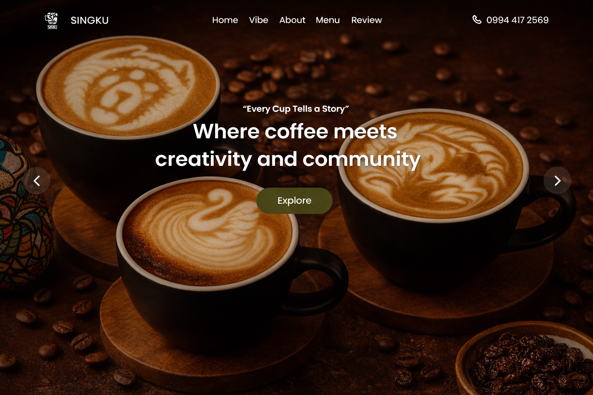
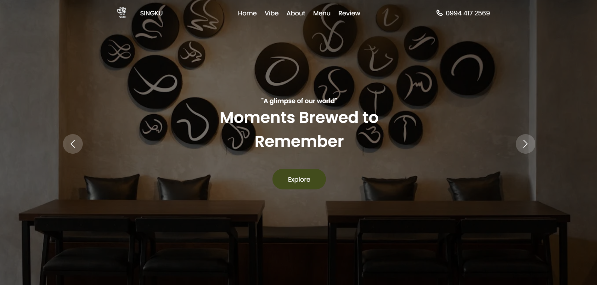
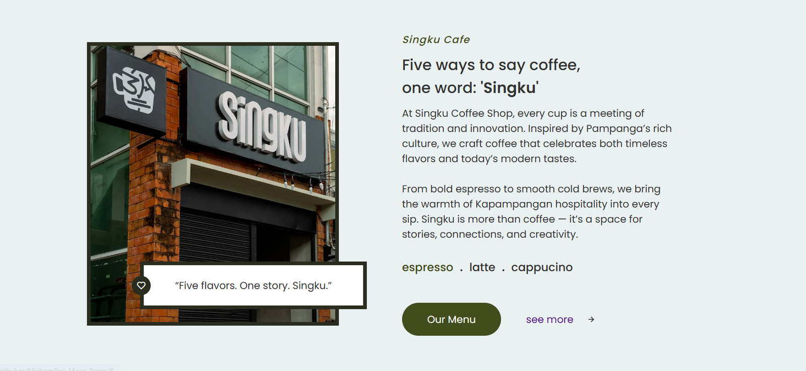

The Objective
This project is a modern café website inspired by Singku’s brand identity and customer experience. The platform showcases featured drinks, meals, and desserts through a visually engaging and responsive interface.
It includes an interactive menu system, a simple cart functionality, and a receipt email feature, allowing users to simulate an online ordering experience. The design emphasizes clean layout, strong imagery, and warm café-themed aesthetics to reflect a welcoming coffee shop atmosphere.
Frontend Architecture
Digital Brasserie
A custom-built, interactive menu featuring CSS-driven hover effects and categorized artisanal offerings.
Adaptive Layout
Mobile-first design utilizing Flexbox and Grid to ensure a seamless browsing experience across all device formats.
Asset Optimization
Implementation of native lazy-loading and optimized image formats for rapid storytelling and minimal latency.
Vanilla Logic
Lightweight JavaScript modules for dynamic content rendering, scroll reveals, and smooth-state transitions.